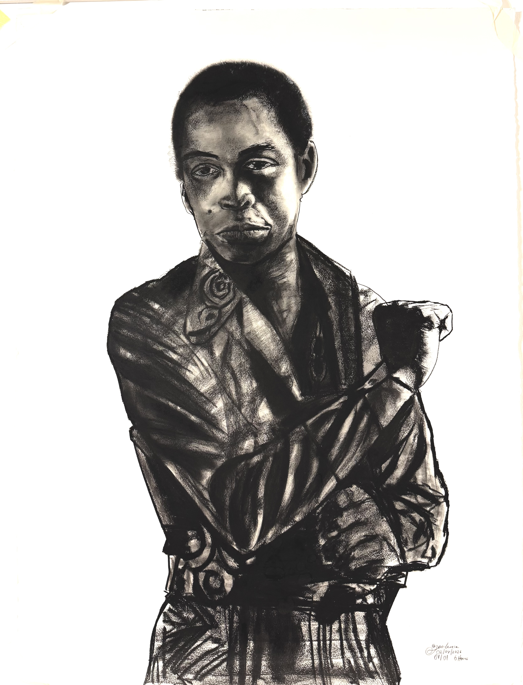

The Stance
Original Charcoal Portrait
A powerful portrait of Fela Anikulapo Kuti created through expressive charcoal textures, dramatic contrast and bold mark-making.
About The Artwork
The Stance captures Fela Anikulapo Kuti in a commanding arms-folded pose, reflecting his confidence, individuality and cultural influence.
Created entirely by hand using charcoal and graphite techniques, the artwork explores texture, shadow and character. The layered charcoal marks create depth and a sculptural quality that extends beyond traditional portraiture.
This piece represents a tribute to one of Africa's most influential cultural figures, preserving his presence through traditional fine art techniques.
Original Artwork
Charcoal and graphite pencil
100% cotton archival paper
40" H x 26" W
32.3" H x 26" W
6 hours
Original one-of-a-kind artwork
£2,800
Sold
Private Collection
Limited Edition Fine Art Prints
Collectors can own this artwork as a museum-quality archival print. Each print is produced on premium Hahnemühle fine art paper, signed by the artist, numbered within the edition, and supplied with a Certificate of Authenticity.
Available Sizes
| Size | Paper | Price | Purchase |
|---|---|---|---|
| A4 | 310gsm Hahnemühle Photo Rag | £95 | Purchase Print |
| A3 | 310gsm Hahnemühle Photo Rag | £175 | Purchase Print |
| A2 | 310gsm Hahnemühle Photo Rag | £325 | Purchase Print |
| A1 | 310gsm Hahnemühle Photo Rag | £550 | Purchase Print |
Edition Details
Limited edition of 50 prints. Each print is individually signed, numbered and supplied with a Certificate of Authenticity.